A01 · AIM 4.7 — Buddy List
Primary: AOL feature page; image archived 2001-12-06
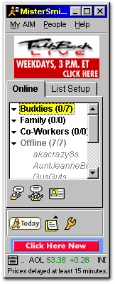
Look at: Grouped presence, counts, running man, compact action icons.
Identification: 4.7, identified by first-party page
Limit: Archive date is not a release date; exact Windows edition unstated.
Source page · Source image · Local original
File provenance
162 × 399 px · GIF · 11743 bytes · 1 frame(s)
SHA-256: d1b8adc0f041606f46e6012e03fa989285b64bd332e6c7e9df9b2e1a37f760da
A02 · AIM 4.7 — IM window
Primary: AOL feature illustration; image archived 2002-01-26
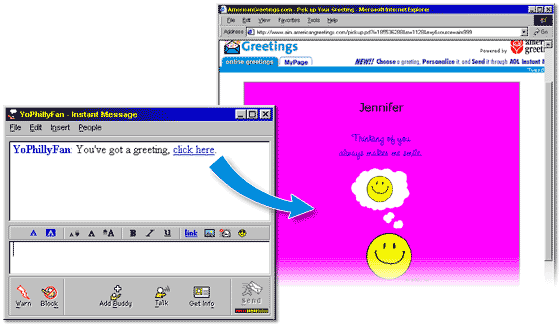
Look at: White transcript and editor, inline screen name, formatting between panes.
Identification: 4.7, identified by first-party page
Limit: Feature illustration includes a browser and blue arrow; board uses a labeled crop.
Source page · Source image · Local original
File provenance
560 × 328 px · GIF · 18471 bytes · 1 frame(s)
SHA-256: 0d72b5dba775aa652f5c23f8fd5d2bd8936bf5d46e91f0e4bad74cfa8cb6b005
A03 · AIM 4.8 — Away editor
Period tutorial: source and image archived 2003-04-10
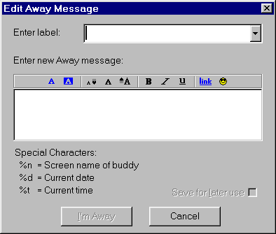
Look at: Named away messages, rich-text editing, substitution tokens, explicit action.
Identification: 4.8, explicitly identified by tutorial
Limit: Exact Windows edition/build and screenshot creation date unstated.
Source page · Source image · Local original
File provenance
394 × 335 px · GIF · 4761 bytes · 1 frame(s)
SHA-256: 4a3fa43ba6a0f01a3dfab7fb3f61e9d64364bdd4eef57ba5ae01009a58e975ac
A04 · AIM 4.8 — Away presence
Tutorial asset; original capture date unverified
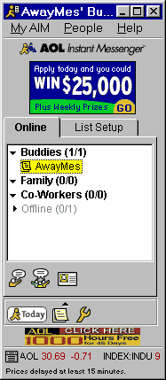
Look at: Notepad away marker; grouped Online/Offline counts; status as identity.
Identification: 4.8, identified by linked tutorial
Limit: Do not date this live asset to the tutorial archive automatically.
Source page · Source image · Local original
File provenance
187 × 429 px · GIF · 8247 bytes · 1 frame(s)
SHA-256: 9a05e9f402e131e4ac346ec057334634fc224b47d7c866c170e6e870965a7a19
A05 · AIM 3.0.1464 — Sign on
Secondary repost (2023 article); capture date unverified
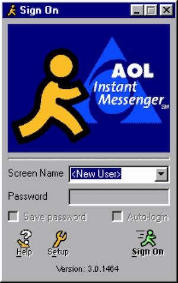
Look at: Brand-heavy arrival ritual, screen-name identity, illustrated action controls.
Identification: 3.0.1464, visibly printed in screenshot
Limit: Not proven to be a period-created capture; exact Windows edition unstated.
Source page · Source image · Local original
File provenance
300 × 476 px · JPEG · 40765 bytes · 1 frame(s)
SHA-256: 1bf8c4771e208d590470bb474442795f313ea7f905147417a65235aab341ddd0
A06 · AIM — Customized conversation
Secondary repost; version/date unverified
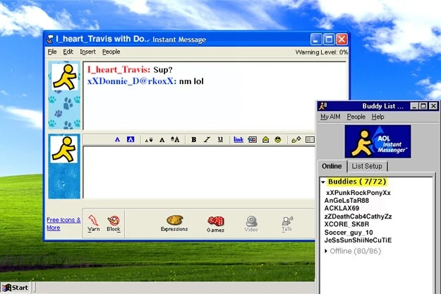
Look at: Buddy icons and personal styling frame a white, direct text conversation.
Identification: Not stated; Windows XP appearance visible
Limit: Paw-print side decoration is customization, not a default-client baseline.
Source page · Source image · Local original
File provenance
625 × 416 px · JPEG · 76543 bytes · 1 frame(s)
SHA-256: 34a91cfdf284364d6d09b07ab836636c1498909c063236cccf32515fb6de720a
B01 · MSN Messenger 6.0 — Contacts
Microsoft-attributed image preserved by mynetx in 2010
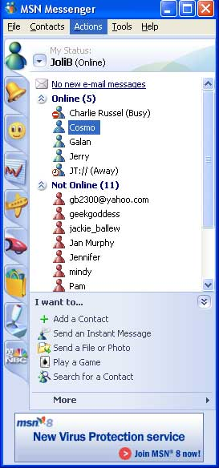
Look at: Person-shaped presence icons, curved blue header, service tabs and tasks.
Identification: 6.0, source caption; Windows XP visible
Limit: Uploader attributes Microsoft; original capture/build date unverified.
Source page · Source image · Local original
Credit: Microsoft UI screenshot, preserved by Flickr user mynetx; attribution is uploader-stated.
Uploader license — CC BY-SA 2.0 per Flickr page; underlying Microsoft UI rights not independently established.
File provenance
273 × 584 px · JPEG · 32307 bytes · 1 frame(s)
SHA-256: 6133a1079b3b6f3890c9b0b0edae7c2e433ccba4dd4685657a316cffb9794f7d
B02 · ICQ 2000a — Advanced Mode
Historical review illustration; capture date unverified
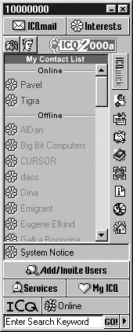
Look at: Numeric identity, flower markers, dense contact list and ICQuick rail.
Identification: 2000a, visible and identified by review
Limit: Grayscale source: do not infer original colors. Exact Windows edition unstated.
Source page · Source image · Local original
File provenance
170 × 422 px · GIF · 13315 bytes · 1 frame(s)
SHA-256: d7c0c327cb4c8d239ff8e40aa09f82de27335d1c4bef696eee37893f83313fba
B03 · AIM for iPhone — Buddies
Web Design Museum: identified as 2010 app
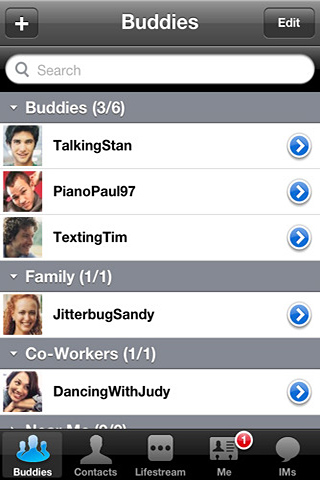
Look at: Buddy groups and identities survive after desktop window chrome disappears.
Identification: AIM for iPhone, 2010 per museum; build unstated
Limit: Later mobile adaptation, not early-2000s desktop baseline.
Source page · Source image · Local original
File provenance
320 × 480 px · JPEG · 55545 bytes · 1 frame(s)
SHA-256: c5fddfa979286b3fb4382c2a6d0cc8dc41f3870ff889cbabbb3eee09f2186890
B04 · AIM for iPhone — Conversation
Web Design Museum: identified as 2010 app
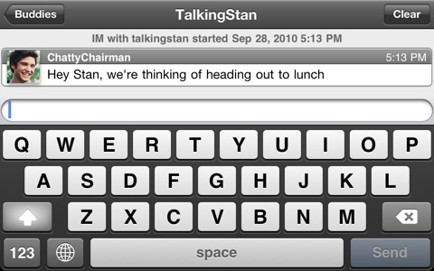
Look at: Person-first thread, narrow input, OS-native keyboard and navigation.
Identification: AIM for iPhone, 2010 per museum; build unstated
Limit: Landscape keyboard state; later mobile adaptation, not desktop baseline.
Source page · Source image · Local original
File provenance
480 × 300 px · JPEG · 49307 bytes · 1 frame(s)
SHA-256: 438f42b7f141e713da9a41ce51ed188794543ab5d5edb911a76e85707d6f6b87
S01 · AIM 4.7 — Font and presence preferences
Primary: AOL feature page; image archived 2002-03-19
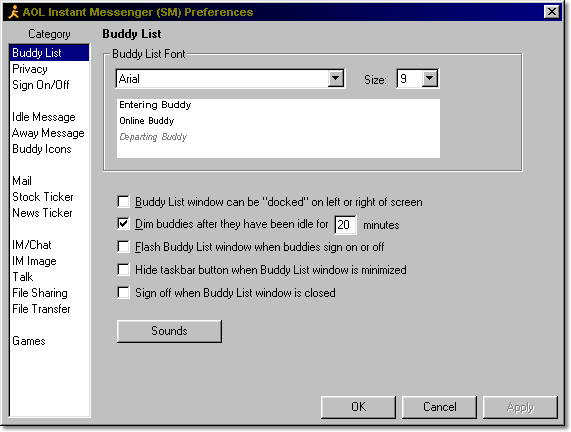
Look at: Screenshot explicitly shows Buddy List Font: Arial, Size: 9; typography was configurable.
Identification: 4.7, identified by first-party page
Limit: Supporting detail, not a blanket claim that every AIM surface used Arial.
Source page · Source image · Local original
File provenance
571 × 432 px · GIF · 12431 bytes · 1 frame(s)
SHA-256: 2d634719132df32752a6d9cb07e8b7e5285bebbdb34c2e238b1caa13c665535a
{kind=link}
{kind=link}
{kind=link}
{kind=link}
{kind=link}
{kind=link}
{kind=link}
{kind=link}
{kind=link}
{kind=link}
{kind=link}